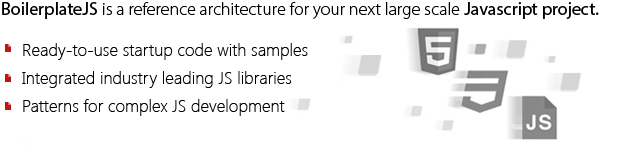
What is BoilerplateJS?
BoilerplateJS provides reference architecture to take
the pain out of large scale JavaScript development. BoilerplateJS
is a collection of product engineering patterns, and some solid
integrations of industry-leading JavaScript libraries..
BoilerplateJS does not reinvent processes for concerns such as MVC or Routing. It only defines architectural best practices and demonstrates sample code for complex JS development. Use your prefered libraries if you do not like the libraries shipped by default.
BoilerplateJS does not reinvent processes for concerns such as MVC or Routing. It only defines architectural best practices and demonstrates sample code for complex JS development. Use your prefered libraries if you do not like the libraries shipped by default.
Should I use it?
BoilerplateJS helps you avoid getting vendor locked. Remember, it's just placing your own code in the right architecture
for integrating your favourite libraries.
With BoilerplateJS we address many of the critical concerns in large-scale JavaScript development. Have a look below. If these are important concerns to you, then we are a matching community!
With BoilerplateJS we address many of the critical concerns in large-scale JavaScript development. Have a look below. If these are important concerns to you, then we are a matching community!
-
Solution Structure| How should I organize my solution structure?
- 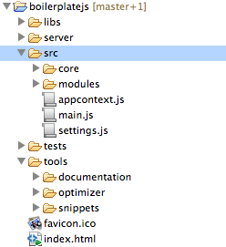
Large scale JavaScript development involves many different file
types and formats. Some of it is your production code, and some may be for unit testing, build scripts,
third-party libs, etc.
Solution structure complexity may not stop there. Your production code needs a structure that makes your development extensible, flexible and modular. In addition, you will need tools for generating documentation, and JavaScript optimization, properly attached to the solution structure. Also your unit tests will need be properly located with access to the source files and related third-party libraries too.
- 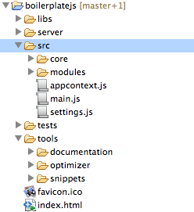
Large scale JavaScript development involves many different file
types and formats. Some of it is your production code, and some may be for unit testing, build scripts,
third-party libs, etc.
-
Dependency Management| How do I do modularize object oriented programming with plain JavaScript?
-
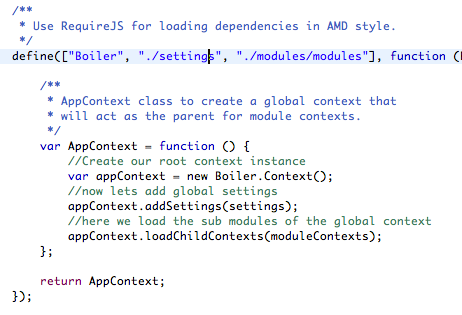
Being a dynamic multi-paradigm language, JavaScript has its best use when its functional power is blended with some essence of object orientation.
Gone are the days we coded JS in a single massive script file. BoilerplateJS modularizes the code in logical parts that are compliant with the asynchronous module definition API (AMD API) allowing unit encapsulation and dependency management.
In addition, BoilerplateJS code demonstrates best practices for familiar OO programming that allow creation of classes containing static, public and private spaces (you will find some unit tests demonstrating use of OO patterns under the 'tests' directory). By default Boilerplate uses requirejs as the underlying AMD loader.
-
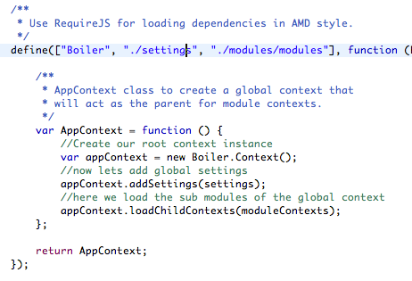
Being a dynamic multi-paradigm language, JavaScript has its best use when its functional power is blended with some essence of object orientation.
-
Product Modules | My product suite has multiple product modules, how should I go about it?
-
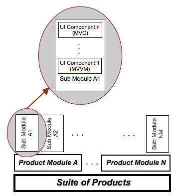
Building software products is different from building a web-application or a website. Products
are commonly a part of a larger product suite where each product module contains
sub modules for its different functional areas. Likewise depending on the
complexity, multiple levels of sub-modularization is not uncommon.
'Boiler.Context' is one of the most important classes in BoilerplateJS reference architecture. A 'Context' represents a self contained and controlled facade for all of the resource needs of a module. Each context is self contained and protected, but also has the ability to interact with other contexts in a controlled manner (e.g. through events).
Contexts can be nested in order to create a parent-child association, to form a context tree. This is a common topology for product suites where a global context becomes the parent context, and product modules have independent child contexts of their own. Associated contexts possess limited knowledge of each other, for inheriting configuration settings from the parent.
-
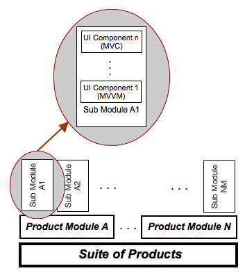
Building software products is different from building a web-application or a website. Products
are commonly a part of a larger product suite where each product module contains
sub modules for its different functional areas. Likewise depending on the
complexity, multiple levels of sub-modularization is not uncommon.
-
UI Components | UI layer is going to be complex in my product. How should I design my components?
-
 It might be just the UI that makes or break your product in the market.
BoilerplateJS keeps the view layer open for developers to mix
and match different UI libraries as required. By default it ships with
knockoutJS and jQuery, that are sufficient for simple UI needs.
It might be just the UI that makes or break your product in the market.
BoilerplateJS keeps the view layer open for developers to mix
and match different UI libraries as required. By default it ships with
knockoutJS and jQuery, that are sufficient for simple UI needs.
The important UI class in Boilerplate is 'Boiler.ViewTemplate'. This class assist you to deal with 'V' (out of MVx architecture) related aspects such as template attachment to DOM, CSS attachment to DOM, localization, etc. Vx layers of MVx architecture are open for developers to select among any MVC, MVVM, or MVP framework.
BoilerplateJS encourages you to make your UI components self contained as much as possible. Following is a typical structure of a BoilerplateJS UI component:assets (folder) Contains any assets such as images, animations, etc that are a part of your UI components nls (folder) Localization resources for different locales that are needed by your UI components style.css Styles that are not a part of the overall theme, but specific to the UI components view.html HTML view template for your UI component. Boiler classes will help attach this to the DOM viewmodel.js This is the logic/code behind (MVVM here). It could also be a controller.js in the case of MVC component.js Encapsulation of all of the above. The outside world interacts with the component via this class.
-
-
Event Driven Messaging | How should my loosely coupled components interact?
-
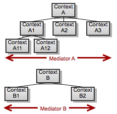
Architecture of BoilerplateJS encourages modules and UI components to be self contained
and loosely coupled. But in complex applications, it is normal to have some components interacting with each other.
BoilerplateJS recommends an event based pub-sub mechanism for such communication needs.
'Boiler.Context' exposes a pair of mediating methods 'listen' & 'notify' which enable components to interact. All contexts in the same context hierachy share a single mediator. This means UI components in a particular context hierachy are able to communicate, even though they are not a part of the same context.
-
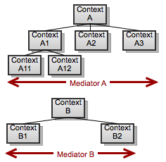
Architecture of BoilerplateJS encourages modules and UI components to be self contained
and loosely coupled. But in complex applications, it is normal to have some components interacting with each other.
BoilerplateJS recommends an event based pub-sub mechanism for such communication needs.
-
Controller Routing | I'm building a single page app. What about bookmarking and browser history?
-
It is a common requirement to have your functionality be directly accessible via bookmarked URLs. But remember, it might not be trivial to support bookmarking, history, back/forward buttons later, unless this is planned for in the initial architecture.
 BoilerplateJS’s module structure inherently supports bookmarking and browser history
thanks to its UrlController class. Your components can register themselves to a URL
controller by specifying the URL pattern, on which they want to be activated.
BoilerplateJS’s module structure inherently supports bookmarking and browser history
thanks to its UrlController class. Your components can register themselves to a URL
controller by specifying the URL pattern, on which they want to be activated.
In addition to UrlController, BoilerplateJS also provides the option of activating components within specific DOM elements using the DomController. This is very relavant when you want your components to be embeddable in a third-party website or a portal, just as the Facebook-Like box is.
-
-
Unit Testing | I'm writing durable product code. Can I unit test my JavaScript code?
-
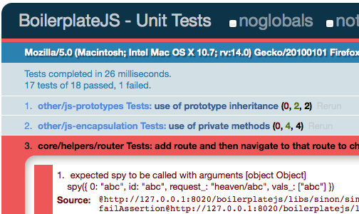 Test driven development encourages you to write less coupled, cohesive code that
is easy to change. BoilerplateJS comes with ready-to-use, integrated Unit Testing facilities
using QUnit.
We have taken the initiative and most of the core classes in the platform are fully covered with unit tests. Our test suite allows you to isolate modules, mock dependencies and integrate other unit testing best practices such as stubbing and assertions.
-
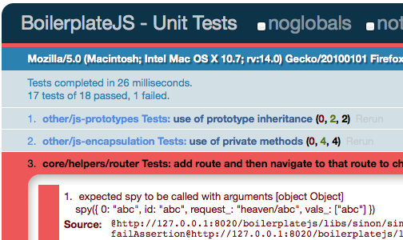 Test driven development encourages you to write less coupled, cohesive code that
is easy to change. BoilerplateJS comes with ready-to-use, integrated Unit Testing facilities
using QUnit.
-
Localization | should I provide native language support for my users?
- 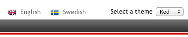 In JavaScript based single page applications, UI rendering happens completely in the browser. Therefore it makes very much sense that the localization of UI components should also happen in the browser. BoilerplateJS lets you define localization resources per UI component, enabling you to structure and manage resource files effectively.
-
Document Generation | How can I maintain good documentation for my product?
-
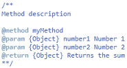 Having documentation for your product adds maintainability, and makes debugging processes easier. But when the source is modified with the changing requirements, developers have to put extra effort into maintaining the documentation
BoilerplateJS ships YUIDoc as a 3rd party tool for document generation using the comments in the source
All you have to do is to comment the source code using a few annotations. Then run the batch file document.bat (On linux run ‘document.sh’) under the documentation directory. This will generate the documentation as an HTML web page which is ready to publish.
-
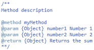 Having documentation for your product adds maintainability, and makes debugging processes easier. But when the source is modified with the changing requirements, developers have to put extra effort into maintaining the documentation
-
Optimized Deployment | How can I optimize my code for deployment?
-
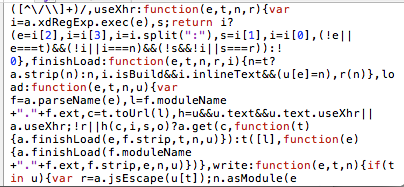 Using JavaScript can make your application dynamic and active however large numbers
of files, and large file sizes being downloaded into the browser can lead to pages
becoming unresponsive. To avoid this BoilerplateJS provides
the RequireJS optimizer as a tool in the framework which will combine related
scripts, and minify the JavaScript code to provide better performance.
After optimization only a single file will be loaded as the application, and all the files will be compressed. Your optimized code will look like this:
-
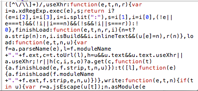 Using JavaScript can make your application dynamic and active however large numbers
of files, and large file sizes being downloaded into the browser can lead to pages
becoming unresponsive. To avoid this BoilerplateJS provides
the RequireJS optimizer as a tool in the framework which will combine related
scripts, and minify the JavaScript code to provide better performance.
This looks great... but what about knockoutjs and backbonejs?
BoilerplateJS does NOT reinvent your wheels!!!
We are NOT attempting to replace any of the established libraries that you already use and love. What BoilerplateJS provides is a reference architecture that demonstrates the best practices for integrating your libraries for large scale product development.
Of course, we ship a few libraries by default (for example knockoutjs, requirejs crossroadsjs & qunit) but if you do not like any of those you can replace them with your favourite library. As proof, due to popular demand, we have incorporated (from v0.2rc) an exmaple of backbonejs side-by-side with knockoutjs for creating UI components.
But on the otherhand, be mindful that an MVC or MVVM library alone does not define sufficient architecture for large scale JavaScript development. That's exactly what we address with BoilerplateJS.
We are NOT attempting to replace any of the established libraries that you already use and love. What BoilerplateJS provides is a reference architecture that demonstrates the best practices for integrating your libraries for large scale product development.
Of course, we ship a few libraries by default (for example knockoutjs, requirejs crossroadsjs & qunit) but if you do not like any of those you can replace them with your favourite library. As proof, due to popular demand, we have incorporated (from v0.2rc) an exmaple of backbonejs side-by-side with knockoutjs for creating UI components.
But on the otherhand, be mindful that an MVC or MVVM library alone does not define sufficient architecture for large scale JavaScript development. That's exactly what we address with BoilerplateJS.
Where is the community?
The BoilerplateJS community is highly active on stackoverflow .
We encourage you to ask your questions there
with the relavant tags (e.g. boilerplatejs, javascript). If you use the tag 'boilerplatejs', generally
questions are answered within a few hours.
Incase you need direct contact with the BoilerplateJS team (e.g. for reporting an issue), you may use the github issues page.
We really like to hear from you regarding your BoilerplateJS experiences. Feel free to use #boilerplatejs on Twitter. If you plan to join BoilerplateJS as a contributer please contact us through github.
Incase you need direct contact with the BoilerplateJS team (e.g. for reporting an issue), you may use the github issues page.
We really like to hear from you regarding your BoilerplateJS experiences. Feel free to use #boilerplatejs on Twitter. If you plan to join BoilerplateJS as a contributer please contact us through github.